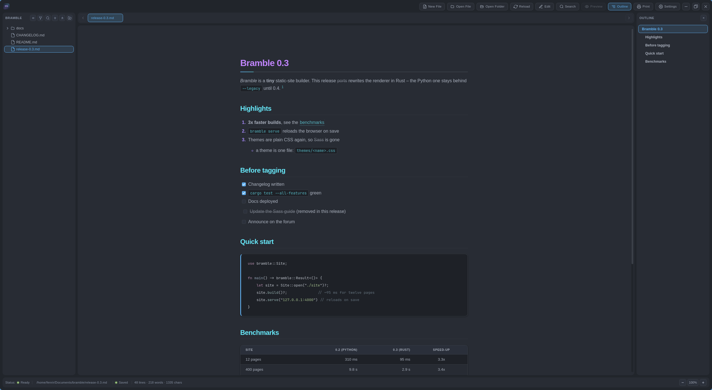
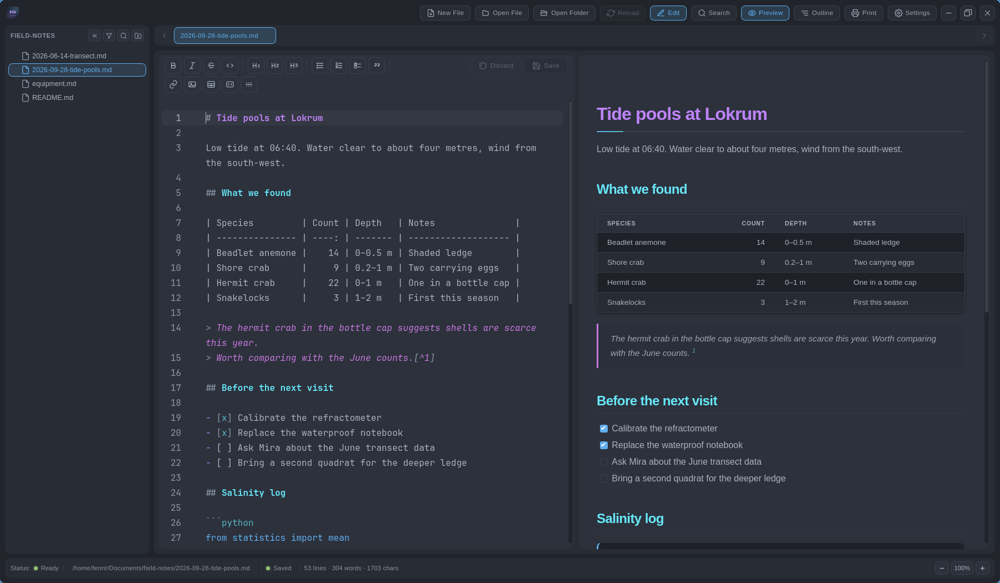
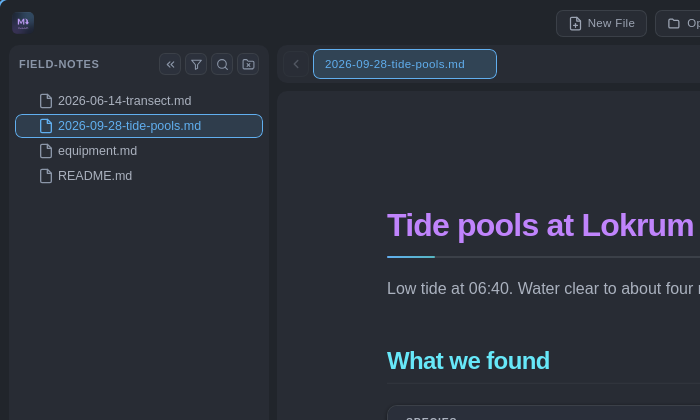
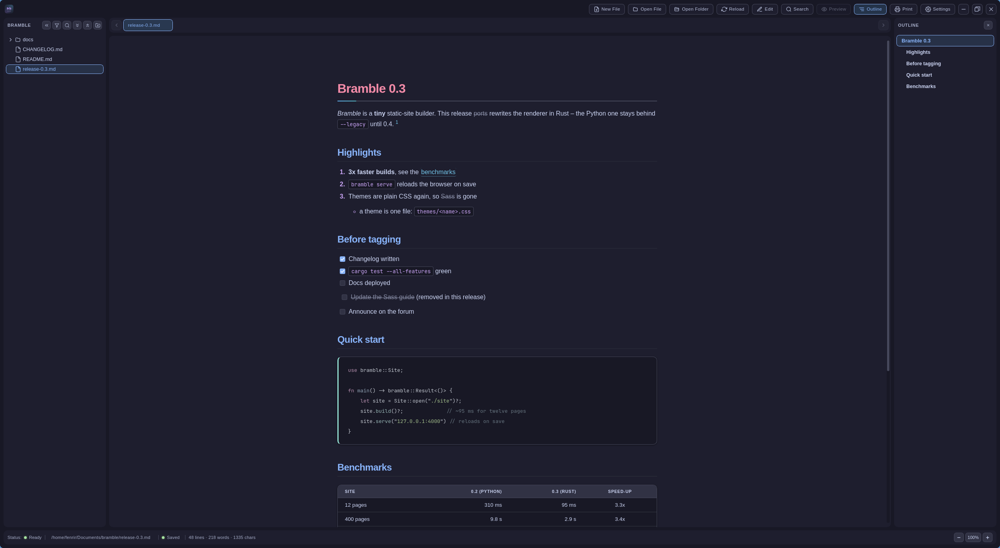
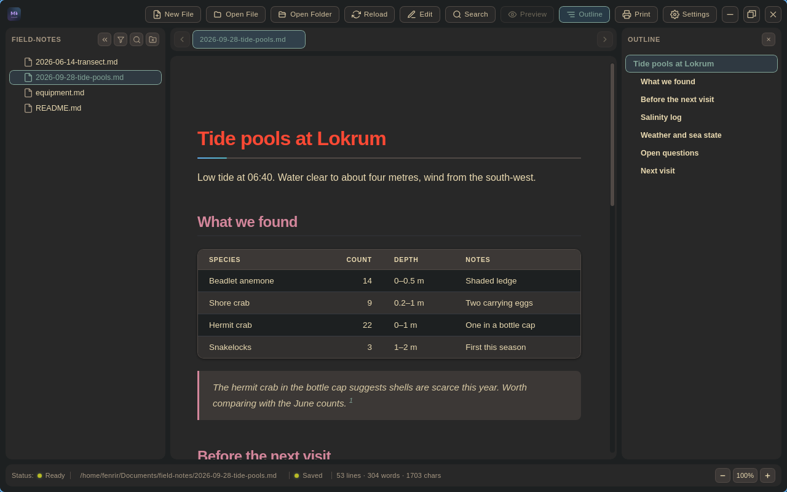
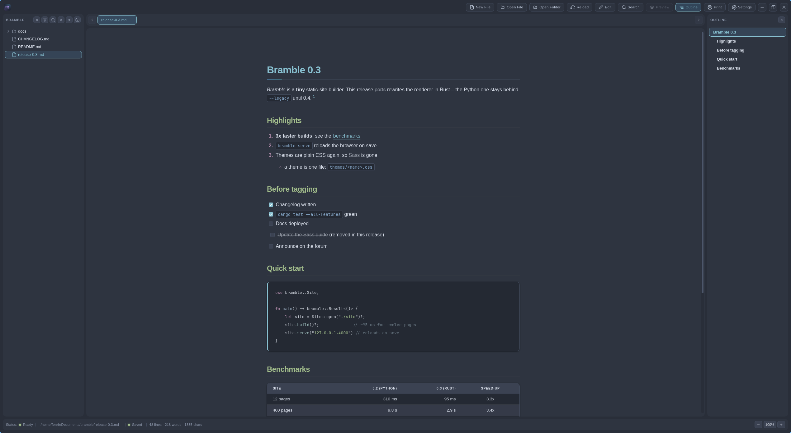
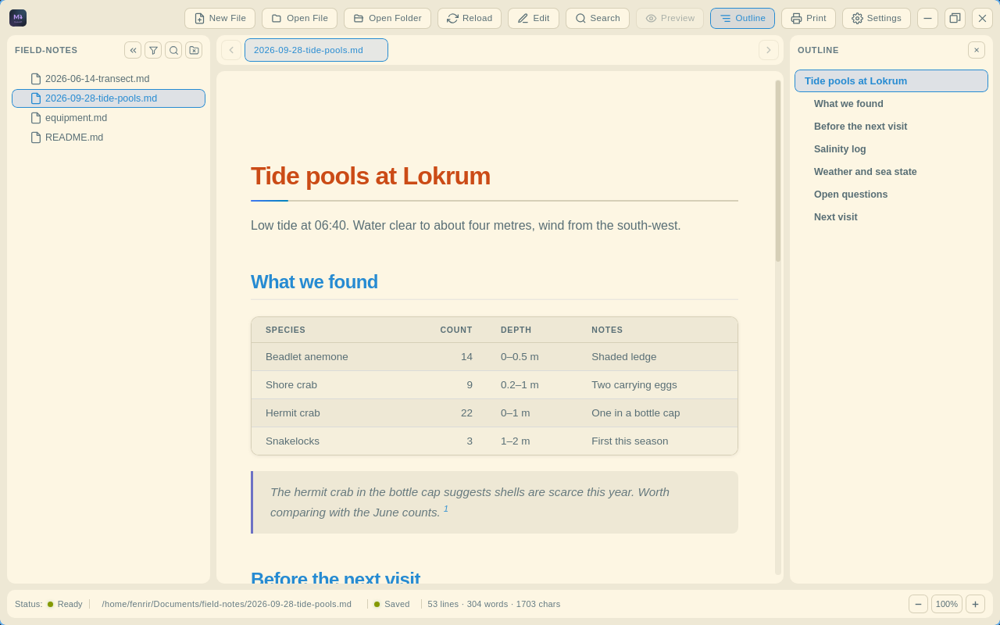
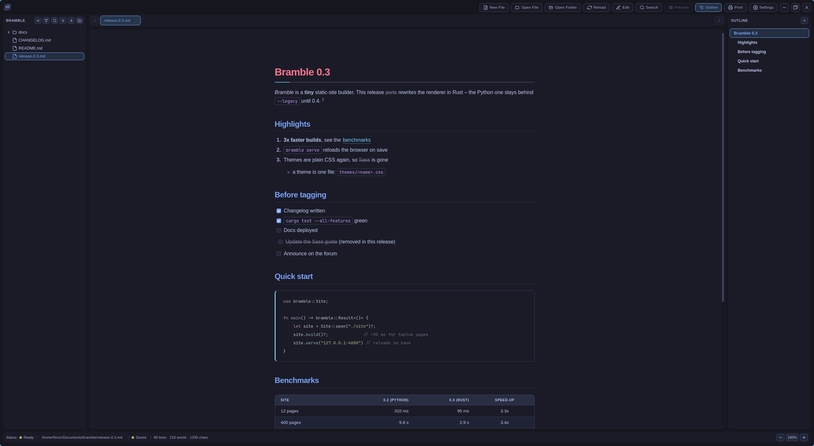
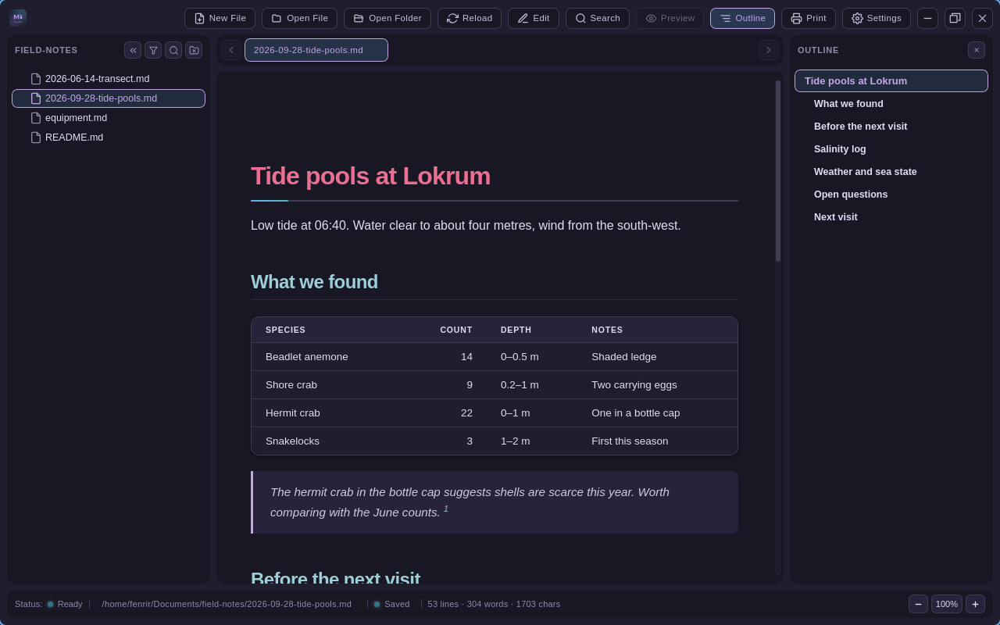

Markdown, without shipping a browser.
OxideMD is a native Markdown viewer and editor for Windows, Linux and macOS. It draws through the webview your system already has, so the whole app is a few megabytes and a window is on screen in well under a second.
- Download for Windows Installer for 64-bit Windows 10 and 11
- Download for macOS Disk image for Apple Silicon
- Install on Linux Signed apt, dnf and pacman repositories
Also: Windows .msi, macOS for Intel, Linux AppImage, and every build on the releases page.

| Windows installer OxideMD_4.14.0_x64-setup.exe | 4.9 MB |
|---|---|
| macOS disk image Apple Silicon | 9.8 MB |
| Linux package .deb, also .rpm and pacman | 8.4 MB |
| Cold launch to first window | 0.33 s |
Write on the left, read on the right
Press Ctrl+E and the document becomes an editor with
Markdown-aware highlighting, a formatting toolbar and dialogs for
tables, links, images and code blocks. The preview keeps pace as you
type and scrolls with you. Drag the divider, or put the preview on
whichever side you like.
Enter continues a list or a quote and a second press leaves it. Every file autosaves a draft, so a crash costs nothing, and OxideMD warns before it overwrites a file that changed on disk behind you.

A folder is a workspace
Open a folder and it becomes a filterable tree in the sidebar. OxideMD watches it, so a file edited elsewhere reloads in its tab, and a search runs across every Markdown file underneath.
Tabs keep their own scroll, zoom and split state and reorder by drag or keyboard. The outline follows the section you are reading and jumps between headings. Narrow the window and the sidebars fold into drawers instead of squeezing the text.

Ten themes, or every colour your own
Atom One Dark and Light, Catppuccin Mocha, Dracula, Gruvbox, Nord, Rosé Pine, Solarized Light and both Tokyo Nights ship in the box. Every colour in the interface is editable, and a theme exports to a JSON file you can share. Bring your own fonts too, as TTF, OTF, WOFF or WOFF2.

Catppuccin Mocha
Gruvbox Dark
Nord
Solarized Light
Tokyo Night
Rosé Pine
Also in the box
- Search that highlightsMatch navigation and a case-sensitivity toggle, in the document and inside the editor with replace.
- Print to PDFThrough the system print dialog, either light-on-white or in your theme's colours.
- Reading width and line heightSet the measure anywhere from 480 to 2400 pixels, and choose whether single line breaks are kept.
- Syntax highlightingFenced code in hundreds of languages, rendered by syntect in the Rust backend.
- Shortcuts you can rebindEvery action has a shortcut, and the settings page flags conflicts as you type them.
- Drag and dropDrop Markdown files on the window to open them, or an image into the editor to insert it.
- A command line
oxidemd notes.mdopens a file, and a built-in updater keeps the app current. - Free softwareGPL-3.0-or-later, written in Rust with Tauri and CodeMirror 6. The source is on GitHub.
Install on Linux with your package manager
Add the signed repository once and updates arrive with the rest of your system. Pick your distribution and paste the commands into a terminal.
Choose your distribution
sudo install -d -m 0755 /etc/apt/keyrings
curl -fsSL https://fenrirthegray.github.io/OxideMD/oxidemd.gpg \
| sudo tee /etc/apt/keyrings/oxidemd.gpg > /dev/null
sudo tee /etc/apt/sources.list.d/oxidemd.sources > /dev/null <<'EOF'
Types: deb
URIs: https://fenrirthegray.github.io/OxideMD/apt
Suites: stable
Components: main
Architectures: amd64
Signed-By: /etc/apt/keyrings/oxidemd.gpg
EOF
sudo apt update
sudo apt install __APT_PKG__sudo tee /etc/yum.repos.d/oxidemd.repo > /dev/null <<'EOF'
[oxidemd]
name=OxideMD
baseurl=https://fenrirthegray.github.io/OxideMD/rpm
enabled=1
gpgcheck=1
gpgkey=https://fenrirthegray.github.io/OxideMD/oxidemd.asc
EOF
sudo dnf install __DNF_PKG__curl -fsSL https://fenrirthegray.github.io/OxideMD/oxidemd.asc -o /tmp/oxidemd.asc
sudo pacman-key --add /tmp/oxidemd.asc
sudo pacman-key --lsign-key __GPG_KEY_ID__
grep -q '^\[oxidemd\]' /etc/pacman.conf || sudo tee -a /etc/pacman.conf > /dev/null <<'EOF'
[oxidemd]
Server = https://fenrirthegray.github.io/OxideMD/arch
EOF
sudo pacman -Syu oxidemd-bin
Then open any Markdown file from your file manager, or run
oxidemd notes.md from a terminal.
Check the signing key
Every package and every repository index is signed with one key. Before trusting it, compare its fingerprint with this one:
__GPG_KEY_ID__
The key is published as oxidemd.asc for dnf and pacman, and as oxidemd.gpg for apt.
Other ways to install
These repositories publish x86-64 builds only. An AppImage, plus the Windows and macOS installers, are attached to every release. Installs from the AppImage, the Windows installers and the macOS disk image update themselves from inside the app.